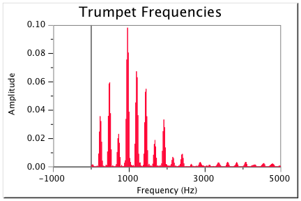
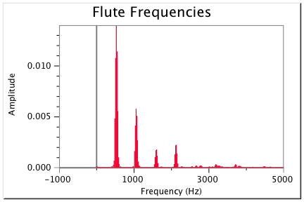

A short introduction to the basic element of music known as "color" or "timbre".
One of the basic elements of music is called color, or timbre (pronounced "TAM-ber"). Timbre describes all of the aspects of a musical sound that do not have anything to do with the sound's pitch, loudness, or length. In other words, if a flute plays a note, and then an oboe plays the same note, for the same length of time, at the same loudness, you can still easily distinguish between the two sounds, because a flute sounds different from an oboe. This difference is in the timbre of the sounds.
Timbre is caused by the fact that each note from a musical instrument is a complex wave containing more than one frequency. For instruments that produce notes with a clear and specific pitch, the frequencies involved are part of a harmonic series. For other instruments (such as drums), the sound wave may have an even greater variety of frequencies.
 We hear each mixture of frequencies not as separate sounds, but as the color of the sound. Small differences in the balance of the frequencies - how many you can hear, their relationship to the fundamental pitch, and how loud they are compared to each other - create the many different musical colors.
The harmonics at the beginning of each note - the attack - are especially important for timbre, so it is actually easier to identify instruments that are playing short notes with strong articulations than it is to identify instruments playing long, smooth notes.
The human ear and brain are capable of hearing and appreciating very small variations in timbre. A listener can hear not only the difference between an oboe and a flute, but also the difference between two different oboes. The general sound that one would expect of a type of instrument - a trombone for example - is usually called its timbre or color.
Variations in timbre between specific instruments - two different trombones, for example, or two different trombone players, or the same trombone player using different types of sound in different pieces - may be called differences in timbre or color, or may be called differences in tone or in tone quality. Tone quality may refer specifically to "quality", as when a young trombonist is encouraged to have a "fuller" or "more focussed" tone quality, or it can refer neutrally to differences in sound, as when an orchestral trombonist is asked to play with a "brassy" tone quality in one passage and a "mellow" tone quality in another.
Using what you have learned about harmonics and the timbre of various instruments like trumpets, flutes and your own voice, use this visual timbre explorer to simulate a tone that sounds the most like a your favorite instrument.
Many words are used to describe timbre. Some are somewhat interchangeable, and some may have slightly different meanings for different musicians, so no attempt will be made to provide definitions. Here are a few words commonly used to describe either timbre or tone quality.
Go back to the visualization tool above - you can click to record your own voice singing and see how the waveform and harmonics respond. Try to sing using some of the descriptions above - rounded or breathy, flat or with vibrato - and see if you understand why the visualizations change!
For more information on what causes timbre, please see Harmonic Series I, Standing Waves and Musical Instruments, and Standing Waves and Wind Instruments.)
Textbook content produced by Catherine Schmidt-Jones is licensed under a Creative Commons Attribution License 3.0 license. Download for free at http://cnx.org/contents/f306fb29-f034-4a34-99d5-a44adf8ae813@15.